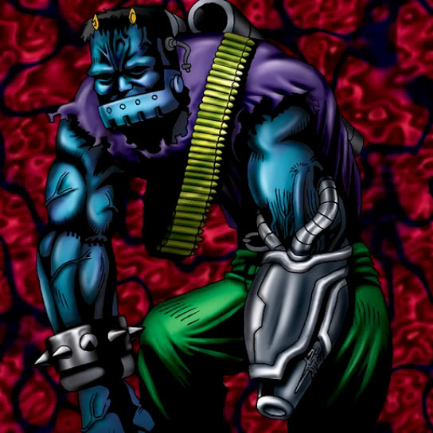

Cyber-Stein

Description: "Turns occupied space into WASTELAND when engaged in battle."
STATS
ATK: 700
DEF: 500DECK COST
Deck Cost per Card: 17EFFECT NOT IMPLEMENTED
Fusion List (21 Possible Fusions)
- Cyber-Stein + Air Marmot of Nefariousness = Giga-tech Wolf
- Cyber-Stein + Anthrosaurus = Cyber Saurus
- Cyber-Stein + Armed Ninja = Cyber Soldier
- Cyber-Stein + Crawling Dragon = Metal Dragon
- Cyber-Stein + Dark Rabbit = Dice Armadillo
- Cyber-Stein + Dragon Zombie = Metal Dragon
- Cyber-Stein + Dragoness the Wicked Knight = Cyber Soldier
- Cyber-Stein + Eyearmor = Cyber Soldier
- Cyber-Stein + Hyo = Cyber Soldier
- Cyber-Stein + Kagemusha of the Blue Flame = Cyber Soldier
- Cyber-Stein + M-Warrior #1 = Cyber Soldier
- Cyber-Stein + Milus Radiant = Giga-tech Wolf
- Cyber-Stein + Mystical Sheep #2 = Giga-tech Wolf
- Cyber-Stein + One-Eyed Shield Dragon = Metal Dragon
- Cyber-Stein + Petit Dragon = Metal Dragon
- Cyber-Stein + Sectarian of Secrets = Disk Magician
- Cyber-Stein + Swordsman from a Foreign Land = Cyber Soldier
- Cyber-Stein + White Dolphin = Misairuzame
- Cyber-Stein + Wolf = Dice Armadillo
- Cyber-Stein + Wood Clown = Cyber Soldier
- Cyber-Stein + Yamatano Dragon Scroll = Metal Dragon